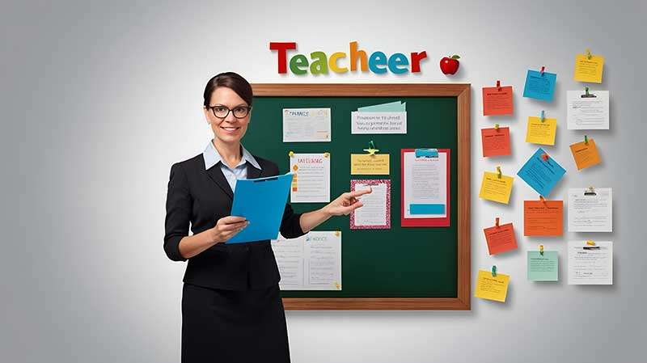

Hello there,
This is Yamkela Lusithi
Digital Learning Developer
About Me

Yamkela Lusithi is a Digital Learning Developer, English Language Educator and AI (Artificial Intelligence) in Education Enthusiast actively involved in the Bachelor of Education(B.Ed.) Honours Research specializing in Language, Literacies and Literature at the University of Johannesburg. My research work focuses on the intersection of Education, Digital literacy and the ethical use if AI in academic settings, designing technology-enhanced learning interfaces that improve access to literacy and Education. With a solid background in pedagogy and technology, I develop AI-enhanced learning interfaces, digital learning environments, and research-informed digital education tools. My goal is to ensure that educational technology strengthens teaching practice while improving learner engagement, digital competence, and academic achievement.
Core Competencies
- EdTech Tools: Articulate 360, Adobe Captivate, Moodle(LMS), Google Classroom, Zoom, Microsoft Teams
- Development: HTML, CSS, JavaScript, Full-Stack Development Principles
- AI Integration: AI Fluency Framework, Prompt Engineering, AI-supported learning design
- Design: Figma, Canva, UI/UX Design for Education
- Research: Digital literacy frameworks (Multimodal Learning Framework, New Literacies Theory)
Featured Projects

MoneySave Jr - Financial Literacy Interface
Designed a fun to use learning web interface to introduce young learners to financial literacy through interactive UI, Simple Mathematical calculations, and responsive learning elements.
- Implemented CSS animations and interactive transitions.
- Built responsive layouts using Flexbox and CSS Grid.
- Designed transparent UI components using RGBA overlays.

Practical English Communication Course
Designed a structured English communication course for adult learners focusing on real-world workplace communication and scenario-based language practice.
- Developed structured modules using Articulate Rise 360.
- Applied adult learning principles in course design.
- Created UI prototypes and visual layouts using Figma.
Visual Learning Design
A sample of some of my academic and digital projects.
- Visual Learning Design: (Multimodal Video and teaching Material for Early learning)
- Digital Literacy Integration in language Education (Multimodal display of Identity)
- Lesson Plans

Lesson Plans (Digital) demo
A sample of online lesson plans (IEB).
- Simple Lesson plan sample designed with HTML and CSS.
- Implemented responsive layouts for mobile and desktop.
- Enhanced accessibility through structured navigation.

The Academic - Research Resource Platform
A digital research platform designed to help students discover academic resources through a clean and accessible interface.
- Developed using semantic HTML and JavaScript.
- Implemented responsive layouts for mobile and desktop.
- Enhanced accessibility through structured navigation.

NoteCraft - Study Notes Web App
A lightweight productivity web app designed to help students capture and organise study notes efficiently.
- Built using Python (Flask), HTML, CSS, and JavaScript.
- Includes note creation, task lists, and a scribble pad.
- Autosave functionality using localStorage.
Educational Background
Formal Education
Bachelor of Education (B.Ed.) Honours (NQF Level 8)
Language, Literacies and Literature
University of Johannesburg
January 2025 - Present
View ProgrammeBachelor of Education (Foundation Phase Teaching)
Walter Sisulu University
Graduated: 2024
View ProgrammeCertifications
Teaching Licences & Courses
- SACE Registration (13001838) - South African Council for Educators View Certificate
- Teaching English as a Foreign Language Course (120-Hours) - Teacher Record View Certificate
- Teaching English as a Foreign Language - EduCourse Online Learning View Certificate
- ESL004: Advanced English as a Second Language - Saylor Academy View Certificate
Advanced AI (Artificial Intelliegence) Certifications
- AI (Artificial Intelligence) in the 4IR - University of Johannesburg View Certificate
- Teaching the AI Fluency Framework - Anthropic View Certificate
- Advanced Prompt Engineering with ChatGPT - upGrad View Certificate
- CS205: Building with Artificial Intelligence - Saylor Academy View Certificate
Technical & Digital Learning Credentials
- Certificate in Full Stack Development - FNB App Academy View Certificate
- Adobe Captivate: Extending with JavaScript - LinkedIn Learning View Certificate
- Accessible E-learning in Articulate 360 - LinkedIn Learning View Certificate
- Digital Skills: Succeeding in a Digital World - The Open University (badge) View Credential
Professional Experience
Postgraduate (Honours-Level) Researcher - Language, Digital Literacy & Literature
University of Johannesburg | Jan 2025 - Present
- Designing Digital learning interfaces to improve learner comprehension.
- Researching AI-integrated approaches to literacy and language development.
- Investigating computational thinking in early education contexts.
Student Teacher (Foundation Phase) - Grade 3
Ndabankulu Junior Secondary School | Jul 2023 - Dec 2024
- Delivered literacy instruction to classes of 30+ diverse learners.
- Implemented phonological awareness learning activities.
- Conducted language, Mathematics, and Life Skills lessons for multilingual classrooms.
Educational Philosophy
Technology should not replace teaching but extend its impact on learning. Its value lies in how effectively it is aligned with evidence-based pedagogy, cognitive development, and the linguistic realities of learners.
By integrating digital literacy, AI tools, and pedagogy, I aim to empower learners with critical thinking skills and lifelong learning abilities. My focus is on how these elements intersect to support cognitive development, language acquisition, and deeper learning.
Technical Stack
 Google Classroom
Google Classroom Quizlet
Quizlet Ms Teams
Ms Teams Canvas
Canvas AI Tools
AI Tools Adobe Captivate
Adobe Captivate Adobe XD
Adobe XD- Figma
- Canva
- LMS
 HTML5
HTML5 CSS3
CSS3 JavaScript (ES6+)
JavaScript (ES6+) VS Code
VS Code GitHub
GitHub Git
Git Accessibility (WCAG)
Accessibility (WCAG)